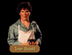

Enter: Chapel of Ishap
| MALAC'S CROSS SHOP: THE ARMORY |
| Everywhere Locklear looked, polished metal gleamed. As much a temple to war as any Temple of Tith, the cramped shop offered a startling variety of weapons and armor. |
"Sometimes people will throw out the strangest things," Locklear said , wiggling the
lid of the refuse barrel loose. "Perhaps there's something in here we can use."
"Someone's boarded over the inside," he grumbled. "Can't see a thing."
"Ticket," he barked through gapped teeth. When James failed to respond quickly
enough, he leaned closer and shouted. "Are you deaf!? I'll need your lecture
ticket."
"What if we don't have a ticket?" James replied.
The man smiled an unpleasant smile. Hooking his thumb at four extremely well
developed soldiers who looked to be members of Malac's Cross' constabulary, he
squinted. "Do you have tickets for this evening's lecture or no?"
"No," James said, backing into the street. "We don't want any trouble. We'll be
leaving now."
The door slammed closed.
When it refused to open, he shrugged. "It's been barred from the inside," he
said. "I guess that's all the lecturer has to say at the moment."
Waving smoke from his face, James was surprised by the number of young nobles
seated in the lecture hall, most looking as if they would rather be drinking ale
in the tavern across the street. Despite that, they made friendly company as
they offered up seats to James and his companions.
"All rise for Guy of Rillanon, First Adviser to the Throne of Kingdom of Isles,"
a page announced from the rear of the room.
After an uncomfortably long wait, a pair of men dressed in purple tabards
advanced to the foot of the rude stage and took up station, the looks on
their faces stern and watchful. Quick behind them was a man dressed all in
black, from tunic to trousers to the patch over his left eye. Mounting the
stage between his escorts, he looked out on the assemblage as if they were
all his soldiers in the field. Seeing James, a smile touched the First Adviser's
face.
"It seems I'm not the only first adviser here, James of Krondor," Guy said,
motioning for everyone to take their seats. "I am surprised Prince Arutha could
spare your company." James shrugged and covered with a quick lie that seemed to
satisfy all in the room, as anxious as the rest for the lecture to begin.
Hours passed. After a lengthy discussion of the battles at Deep Taunton and the
siege of the Shamata Garrison, the First Adviser finished his lecture and
dismissed his boggled students, stepping down from the podium to speak with
James. A grave look was upon Guy's face as he grasped the Seigneur's shoulder.
"You are lucky most of the men in this room don't know Arutha," Guy whispered,
glancing at Owyn. "If they did, none of them would believe you had been sent to
Romney to fetch this puny little squire. I am also curious to know why you are
travelling in the company of a Dark Brother." Seeing the fire burning in the
Adviser's good eye, James realized the old man was asking the questions in deadly
earnest and that his two escorts were standing close for reasons other than
show. "I'll not have Arutha betrayed."
Waiting until the rest of the students had been shunted out the door, James
quickly began to explain the situation, allowing Gorath to fill in the details
which he only partially knew. When he mentioned the Nighthawks and Romney, the
First Adviser nodded.
"Prince Arutha is right to send you to Romney," Guy said. "There is a group of
Kingdom men there. I had Duke de Sevigny send them a few months ago when we
heard about the guild troubles brewing there. We had suspicions the Guild of
Death was involved." Grabbing up his cloak, the First Adviser nodded to his
escorts to check the streets. "If anyone in the Kingdom can find the Nighthawks,
it will be those men from Bas-Tyra. They've been of great help in the cause of
the Kingdom over the past few years. I'll warn you, however, that they've made
quite a few enemies along the way. Watch your step between here and the Black
Sheep Tavern."
Once the guards had indicated that the road was clear, Guy was gone and the
building's watcher shuffled them outside.
Waving smoke from his face, James was surprised by the number of young nobles
seated in the lecture hall, most looking as if they would rather be drinking ale
in the tavern across the street. He shuffled his way through shoulders and
elbows, finding benches for both Owyn and Gorath before taking a seat next to a
scrawny soldier wearing a tabard emblazoned with a red stone tor - the colors of
Highcastle.
Against the back wall a small stage had been set up, its perimeter surrounded by
flickering candles, casting an eerie yellowish glow on the faces of Baron
Troville and the two men who attended him. When at last they had set up the
hardwood podium, the baron stood and looked across the room.
"I wish I could deliver this speech under happier circumstances, but to the
north the Dark Brothers are massing for yet another siege against us," the baron
started slowly. "I am here not by request of your Abbot, but because I await the
arrival of volunteers from Darkmoor and Salador to come and join my forces at
Highcastle. We have received word that the moredhel's new prince, Delekhan, has
unfurled the war banners of Murmandamus."
A rumble passed through the congregation of nobles, the significance of the old
moredhel name not lost on the students. Looking at most of the faces in the
room, James knew that most in the room had only been children when Murmandamus had
led his troops to Sethanon and had likely lost fathers or uncles in that deadly
battle.
"I think therefore this lesson will be a little more practical for our purposes
and will concentrate on the defenses at Highcastle," Troville continued. "Page,
please fetch my maps..."
For five hours the baron lectured on defensive techniques and the essential
tactics known to be of use in Northlands. When at last his energy began to flag,
he took a few questions before calling the meeting to an end and exiting the
hall through a rear exit.
MALAC'S CROSS INN: THE QUEEN'S ROW
Despite the fact that light was dim and pooled only in shallow corners, the mood
within seemed cheerful as the tavernkeeper animatedly related tales of mischief,
reaping gales of laughter from people who had most likely heard his story dozens
of times.
Meet: IVAN SKAALD
BARREL (invalid?)
The barrel smelled awful.
LECTURE HOUSE
James tried to look inside. 

CHAPTER 2 LECTURE: Guy du Bas Tyra
A man took their ticket at the door.
CHAPTER 3 LECTURE: Baron Troville
A man took their ticket at the door.